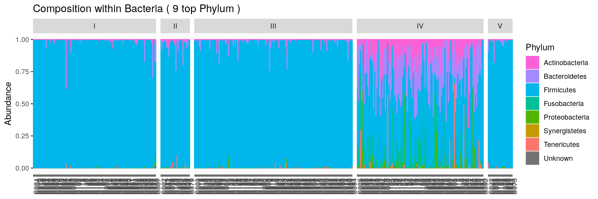
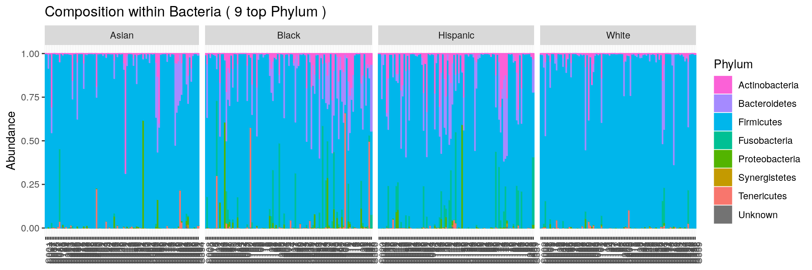

Table of Contents
Introduction
This vignette is a re-analysis of the data set from Ravel et al. (2011), as suggested in the Homeworks section of the slides. Note that this is only one of many analyses that could be done on the data.
Analysis
Setup
We first setup our environment by loading a few packages
library(tidyverse) ## data manipulation
library(phyloseq) ## analysis of microbiome census data
library(ape) ## for tree manipulation
library(vegan) ## for community ecology analyses
## You may also need to install gridExtra with
## install.packages("gridExtra")
## and load it with
## library(gridExtra)
## if you want to reproduce some of the side-by-side graphs shown belowData import
We then load the data from the Ravel et al. (2011) dataset. We assume that they are located in the data/ravel folder. A quick look at the folder content show that all files are plain text files in tsv format. We import them in the proper format (matrix for the abundances and the taxonomy, data.frame for the covariates)
otu <- read.table("data/ravel/counts.tsv") %>% as.matrix()
tax <- read.table("data/ravel/taxonomy.tsv") %>% as.matrix()
map <- read.table("data/ravel/metadata.tsv")The count table is in the taxa \(\times\) samples format, so we build our phyloseq object as follows:
ravel <- phyloseq(otu_table(otu, taxa_are_rows = TRUE),
tax_table(tax),
sample_data(map))
ravel
phyloseq-class experiment-level object
otu_table() OTU Table: [ 247 taxa and 394 samples ]
sample_data() Sample Data: [ 394 samples by 8 sample variables ]
tax_table() Taxonomy Table: [ 247 taxa by 7 taxonomic ranks ]The data consists of 394 samples of the vaginal microbiome of women of reproductive ages and the original studies focused on the link between microbial composition and vaginosis. Each sample is associated to several covariates:
- ID: Woman unique ID
- Ethnic_Group: Ethnic group of the woman (in Asian, Black, Hispanic and White)
- pH: pH in the vagina
- Nugent_Score: Nugent score, a score of bacterial vaginosis on scale from 0 to 10
- Nugent_Cat: Nugent category, derived from the Nugent score. Can be either low (score in 0-3), intermediate (score in 4-6) or high (score in 7-10)
- CST: Community State Type, more on that later.
We can navigate through the metadata
Before moving on to elaborate statistics, we’ll look at the taxonomic composition of our samples
Taxonomic Composition
To use the plot_composition function, we first need to source it:
download.file(url = "https://raw.githubusercontent.com/mahendra-mariadassou/phyloseq-extended/master/R/graphical_methods.R",
destfile = "graphical_methods.R")
source("graphical_methods.R")We then look at the community composition at the phylum level. In order to highlight the structure of the data, we split the samples according to each covariates in turn. We show several figures, corresponding to different taxonomic levels, for the Nugent Categry but only a phylum-level one for other covariates.
Nugent Category
We can see right away that samples with low scores are dominated by Firmicutes and other phyla become more prevalent as the score increases.
plot_composition(ravel, "Kingdom", "Bacteria", "Phylum", fill = "Phylum") +
facet_grid(~Nugent_Cat, scales = "free_x", space = "free_x")We have access to the following taxonimic ranks:
rank_names(ravel)
[1] "Kingdom" "Phylum" "Class" "Order" "Family" "Genus"
[7] "Species"Given the importance of Firmicutes, we can zoom in within that phylum and investigate the composition at the genus level.
plot_composition(ravel, "Phylum", "Firmicutes", "Genus", fill = "Genus", numberOfTaxa = 5) +
facet_grid(~Nugent_Cat, scales = "free_x", space = "free_x")We see that most samples are dominated by the sole lactobacillus genus. Unfortunately, we don’t have access to species level affiliation and can zoom no further.
plot_composition(ravel, "Genus", "Lactobacillus", "Species", fill = "Species", numberOfTaxa = 7) +
facet_grid(~Nugent_Cat, scales = "free_x", space = "free_x")We can also organize, as suggested in the slides, the communities in terms of Nugent Category, CST and pH to examine their impact on community composition. For each of these covariates, we only examine the phylum-level composition:
Nugent Score
The communities become more diverse as the nugent score increases.
plot_composition(ravel, "Kingdom", "Bacteria", "Phylum", fill = "Phylum") +
facet_grid(~Nugent_Score, scales = "free_x", space = "free_x")CST
Communities from CST I-III and V are dominated Firmicutes and have low diversity whereas communities from CST iV are more diverse.
plot_composition(ravel, "Kingdom", "Bacteria", "Phylum", fill = "Phylum") +
facet_grid(~CST, scales = "free_x", space = "free_x")
Ethnic group
Ethnic group seems to be a structuring factor.
plot_composition(ravel, "Kingdom", "Bacteria", "Phylum", fill = "Phylum") +
facet_grid(~Ethnic_Group, scales = "free_x", space = "free_x")
but only because ethnic groups have a very contrasted score distributions:
ggplot(sample_data(ravel), aes(x = Ethnic_Group, group = Nugent_Cat, fill = Nugent_Cat)) +
geom_bar(stat = "count") +
scale_fill_brewer(type = "seq", palette = "Reds")We will seldom use the Ethnic Group in downstream analyses.
pH
Splitting by pH is a bit more involved as pH is not discrete by nature. We could to order the sample by pH using the x = argument.
plot_composition(ravel, "Kingdom", "Bacteria", "Phylum", x = "pH", fill = "Phylum")but we end up with an ugly graph as several samples have exactly the same pH. In this case, there are not that many pH values and we therefore treat it as discrete variable. We observe that the diversity increases with the pH.
plot_composition(ravel, "Kingdom", "Bacteria", "Phylum", fill = "Phylum") +
facet_grid(~pH, scales = "free_x", space = "free_x")Alpha-diversity
The samples have very different sampling depths:
sample_sums(ravel) %>% range()
[1] 693 7361We thus rarefy them before computing alpha-diversities:
ravel_rare <- rarefy_even_depth(ravel, rngseed = 20190124)Graphics
We first explore the impact of each covariates on \(\alpha\)-diversities.
Nugent Score
All measures confirm that diversity increases with Nugent Scores.
plot_richness(ravel_rare, x = "Nugent_Score", measures = c("Observed", "Shannon", "InvSimpson")) +
geom_boxplot(aes(group = Nugent_Score)) ## add one boxplot per Nugent Score valuespH
Low ph correspond to low diversity, although the relationship between pH and diversity breaks down at high pH.
plot_richness(ravel_rare, x = "pH", measures = c("Observed", "Shannon", "InvSimpson")) +
geom_boxplot(aes(group = pH)) ## add one boxplot per pH valueCST
All CST have extremely low effective diversity except for CST IV.
plot_richness(ravel_rare, x = "CST", measures = c("Observed", "Shannon", "InvSimpson")) +
geom_boxplot(aes(group = CST)) ## add one boxplot per CST scoreAnova
We can quantify the previous claims by performing an ANOVA of the diversity against the covariates of interest. For the sake of brevity, we focus here on the effective number of species as measured by the InvSimpson measures. We first build a data.frame with both covariates and diversity indices.
div_data <- cbind(estimate_richness(ravel_rare, measures = "InvSimpson"), ## diversity indices
sample_data(ravel_rare) ## covariates
)Nugent Category
Nugent Category has a significant impact on diversity…
model <- aov(InvSimpson ~ 0 + Nugent_Cat, data = div_data)
anova(model)
Analysis of Variance Table
Response: InvSimpson
Df Sum Sq Mean Sq F value Pr(>F)
Nugent_Cat 3 3149.21 1049.74 545.63 < 2.2e-16 ***
Residuals 391 752.25 1.92
---
Signif. codes: 0 '***' 0.001 '**' 0.01 '*' 0.05 '.' 0.1 ' ' 1with three times the number of effective species in high samples compared to low ones.
coef(model)
Nugent_Cathigh Nugent_Catintermediate Nugent_Catlow
4.878522 2.355929 1.514241 A post-hoc test reveals that all categories have different diversities:
TukeyHSD(model)
Tukey multiple comparisons of means
95% family-wise confidence level
Fit: aov(formula = InvSimpson ~ 0 + Nugent_Cat, data = div_data)
$Nugent_Cat
diff lwr upr p adj
intermediate-high -2.5225936 -3.094529 -1.9506580 0.0000000
low-high -3.3642811 -3.755079 -2.9734830 0.0000000
low-intermediate -0.8416874 -1.351850 -0.3315244 0.0003577pH
pH has a significant impact on diversity…
model <- lm(InvSimpson ~ pH, data = div_data)
anova(model)
Analysis of Variance Table
Response: InvSimpson
Df Sum Sq Mean Sq F value Pr(>F)
pH 1 481.85 481.85 178.18 < 2.2e-16 ***
Residuals 392 1060.07 2.70
---
Signif. codes: 0 '***' 0.001 '**' 0.01 '*' 0.05 '.' 0.1 ' ' 1by increasing it
coef(model)
(Intercept) pH
-5.279626 1.658691 CST
CST has a significant impact on diversity…
model <- aov(InvSimpson ~ 0 + CST, data = div_data)
anova(model)
Analysis of Variance Table
Response: InvSimpson
Df Sum Sq Mean Sq F value Pr(>F)
CST 5 3404.9 680.98 533.47 < 2.2e-16 ***
Residuals 389 496.6 1.28
---
Signif. codes: 0 '***' 0.001 '**' 0.01 '*' 0.05 '.' 0.1 ' ' 1with CST IV having much more diversity than other CST.
coef(model)
CSTI CSTII CSTIII CSTIV CSTV
1.488067 1.574007 1.363830 5.095042 1.629058 A post-hoc test reveals that all CST are comparable except for CST IV.
TukeyHSD(model)
Tukey multiple comparisons of means
95% family-wise confidence level
Fit: aov(formula = InvSimpson ~ 0 + CST, data = div_data)
$CST
diff lwr upr p adj
II-I 0.08593971 -0.6031387 0.7750182 0.9970577
III-I -0.12423726 -0.5271451 0.2786706 0.9162924
IV-I 3.60697485 3.1826046 4.0313451 0.0000000
V-I 0.14099054 -0.5991985 0.8811795 0.9851071
III-II -0.21017698 -0.8843708 0.4640168 0.9131592
IV-II 3.52103513 2.8337996 4.2082706 0.0000000
V-II 0.05505082 -0.8615092 0.9716109 0.9998349
IV-III 3.73121211 3.3314644 4.1309599 0.0000000
V-III 0.26522780 -0.4611247 0.9915803 0.8549592
V-IV -3.46598431 -4.2044579 -2.7275107 0.0000000Beta diversities
We don’t have access to a phylogenetic, we’ll thus stick to jaccard and bray-curtis distances. As explained during the workshop, those distances are only meaningful when computed on rarefied data:
dist.jac <- distance(ravel_rare, method = "cc")
dist.bc <- distance(ravel_rare, method = "bray")Unconstrained ordination
We first perform unconstrained ordination on Jaccard and Bray-Curtis distances and color samples according to covariates to highlight the structure.
pH
Jaccard distance induce a nice linear gradient of samples along the first axis which corresponds to the pH. The structure displayed in the first plance of the MDS is less easy to interpret when using the Bray distance but also capture a much higher fraction of the diversity.
p.jac <- plot_ordination(ravel_rare,
ordinate(ravel_rare, method = "MDS", distance = dist.jac),
color = "pH") + ggtitle("Jaccard")
p.bc <- plot_ordination(ravel_rare,
ordinate(ravel_rare, method = "MDS", distance = dist.bc),
color = "pH") + ggtitle("Bray-Curtis")
gridExtra::grid.arrange(p.jac, p.bc, ncol = 2)Nugent Score
Just like the pH, to which it is highly correlated, Nugent is a strong structuring factor of the communities.
p.jac <- plot_ordination(ravel_rare,
ordinate(ravel_rare, method = "MDS", distance = dist.jac),
color = "Nugent_Score") + ggtitle("Jaccard")
p.bc <- plot_ordination(ravel_rare,
ordinate(ravel_rare, method = "MDS", distance = dist.bc),
color = "Nugent_Score") + ggtitle("Bray-Curtis")
gridExtra::grid.arrange(p.jac, p.bc, ncol = 2)CST
CST are much better separated using the Bray distance than the Jaccard one. This means that although communities from different CST may have highly redudant microbial repertoire, they rarely have the same abundant taxa.
p.jac <- plot_ordination(ravel_rare,
ordinate(ravel_rare, method = "MDS", distance = dist.jac),
color = "CST") + ggtitle("Jaccard")
p.bc <- plot_ordination(ravel_rare,
ordinate(ravel_rare, method = "MDS", distance = dist.bc),
color = "CST") + ggtitle("Bray-Curtis")
gridExtra::grid.arrange(p.jac, p.bc, ncol = 2)Constrained Ordination
Constrained ordination (not covered during the workshop) is similar to unconstrained ordination with the following difference:
- unconstrained ordination tries to capture the whole diversity, no matter where it comes from
- constrained ordination tries to capture only the fraction of diversity that can be explained by some covariates (which can be much smaller that the whole)
To perform constrained ordination, you should change the method argument to CAP (short for Constrained Analysis of Proximities) and specify a formula argument to tell the method what covariates can be used to explain the diversity. For instance, if we focus on the Ethnic Group
ord <- ordinate(ravel_rare, method = "CAP", distance = dist.bc, formula = ~ Ethnic_Group)
p12 <- plot_ordination(ravel_rare, ord, color = "Ethnic_Group", axes = c(1:2))
p23 <- plot_ordination(ravel_rare, ord, color = "Ethnic_Group", axes = c(2:3))
gridExtra::grid.arrange(p12, p23, nrow = 1)Note that the CAP analysis kind of separates the samples according to their ethnic group. This is expected as we considered only the fraction of variance explained by those group. Note also there are only 3 constrained axes as we started with 4 groups (and hence 3 degrees of freedom). Finally, have a look at the percentages of variability: they are all extremely low, revealing that Ethnic group does not explain much.
We can add more covariates in the model to explain a larger fraction of the diversity (this is a bit counter-intuitive at first, but the more covariates you add to the model, the more degrees of freedom you have to explain the diversity and the less constrained is the analysis). Note that results of the full model are remarkably similar to results of the unconstrained analysis (but with smaller percentages of variance explained)
ord <- ordinate(ravel_rare, method = "CAP", distance = dist.bc, formula = ~ pH + Nugent_Cat + CST + Ethnic_Group)
p12 <- plot_ordination(ravel_rare, ord, color = "CST", axes = c(1:2))
p23 <- plot_ordination(ravel_rare, ord, color = "CST", axes = c(2:3))
gridExtra::grid.arrange(p12, p23, nrow = 1)Hierarchical clustering
The hierarchical clustering of Bray-Curtis distances using the Ward linkage function (to produce spherical clusters) show a perfect separation of samples along CST. The CST were indeed defined almost exactly that way. The original study considered Jensen-Shannon Divergences (JSD) instead of Bray-Curtis distances but the result is essentially the same.
Careful readers could also argue that CST IV is quite diverse compared to other CST (the root node of CST-IV is quite high compared to the root node of other CSTs). They would be right as follow-up studies suggested to refine CST IV into subtypes IV-a and IV-b.
par(mar = c(1, 0, 2, 0))
plot_clust(ravel_rare, dist = "bray", method = "ward.D2", color = "CST",
title = "Clustering of samples (Bray-Curtis + Ward)\nsamples colored by CST")PERMANOVA
We use the Bray-Curtis distance to assess which covariates have a structuring effect on the communities.
metadata <- sample_data(ravel_rare) %>% as("data.frame")
model <- vegan::adonis(dist.bc ~ pH + Nugent_Cat + CST + Ethnic_Group, data = metadata, permutations = 999)
model
Call:
vegan::adonis(formula = dist.bc ~ pH + Nugent_Cat + CST + Ethnic_Group, data = metadata, permutations = 999)
Permutation: free
Number of permutations: 999
Terms added sequentially (first to last)
Df SumsOfSqs MeanSqs F.Model R2 Pr(>F)
pH 1 16.213 16.2134 178.039 0.12027 0.001 ***
Nugent_Cat 2 11.939 5.9695 65.551 0.08856 0.001 ***
CST 4 70.956 17.7389 194.791 0.52633 0.001 ***
Ethnic_Group 3 0.825 0.2749 3.019 0.00612 0.001 ***
Residuals 383 34.878 0.0911 0.25872
Total 393 134.811 1.00000
---
Signif. codes: 0 '***' 0.001 '**' 0.01 '*' 0.05 '.' 0.1 ' ' 1The results show that all covariates tested are significant but that some explain more variability than others. For example, CST is the highest structuring factor with 52.6% of variability explained (after controlling for pH and Nugent category) against 0.6% for Ethnic group (after controlling for all other covariates)
Heatmap
We have shown that the samples cluster well by CST when considering the Bray-Curtis distances. We will now investigate the content of those CST by looking at the raw count table. To make counts comparables across samples and avoid being misled by differences in sample sizes, we work with the rarefied version of our dataset. We also group the samples by CST using the faceting mechanism.
plot_heatmap(ravel_rare, low = "yellow", high = "red", na.value = "white") +
facet_grid(~CST, scales = "free_x", space = "free_x")
The whole figure hints as some results we already know:
- CST IV is very diverse (and other CST less so)
- samples are very similar within each CST (and hence cluster together)
- CST I-III and V appear to be dominated by a single OTU (and thus have low effective diversity)
- The dominant OTU of CST I-III and V is also frequently present in other samples (and thus the Jaccard distance may have a hard time distinguishing between samples from different CSTs)
To make the figure easier to read, we can zoom in on the 50 (for example) most abundant taxa
top_50_taxa <- taxa_sums(ravel_rare) %>% sort(decreasing = TRUE) %>% names() %>% head(n = 50)
p <- plot_heatmap(prune_taxa(top_50_taxa, ravel_rare),
low = "yellow", high = "red", na.value = "white") +
facet_grid(~CST, scales = "free_x", space = "free_x")
plot(p)This small help us identify the dominant OTU in each CST:
- CST I: Lactobacillus crispatus
- CST II: Lactobacillus gasseri
- CST III: Lactobacillus iners
- CST V: Lactobacillus jensenii
A few conclusions
The different elements we’ve seen allow us to draw a few conclusions:
- Vaginosis (as diagnosed by high Nugent scores) correspond to a quite diverse microbiota;
- CST are archetypes of communities, 4 of which correspond to healthy communities. They can be defined by clustering the samples according to the Bray-Curtis distance;
- The four healthy CST have low diversity and are dominated by a different lactic acid bacteria, which explains their low pH (and as explained in the paper, the very acid pH ensures that non commensal taxa do not invade and that the ecosystem remains healthy);
- Jaccard distance is not very useful to characterize the CST as samples typically share many OTUs, although in very different abundances;
- After controlling for CST, pH and Nugent category, ethnic group explains almost no difference between samples.